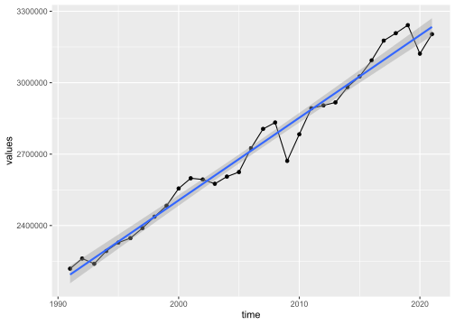

4 Soziale Phänomene und „Gleichgewichte”
4.1 Soziale Phänomene
Soziale Phänomene entstehen durch Entscheidungen und Interaktion von Individuen.
Sie sind regelmäßig „Ergebnis menschlichen Handelns aber nicht menschlichen Entwurfs“ (Hayek) (spontane Ordnung)
4.2 Gleichgewichte
Ein Gleichgewicht liegt vor, wenn ein System ohne „Störungen“ durch äußere Einflüsse in Ruhe verbleibt.
Muster: Individuelle Entscheidungen \(\rightarrow\) Interaktion/Anpassung/Aggregation \(\rightarrow\) Gleichgewicht. Exogener Schock \(\rightarrow\) neue individuelle Entscheidungen \(\rightarrow\) Interaktion/Anpassung/Aggregation \(\rightarrow\) \(\dots\)
Exkurs: Empirische Regelmäßigkeiten, das Bruttoinlandsprodukt
| unit | na_item | geo | time | values |
|---|---|---|---|---|
| Chain linked volumes (2015), million euro | Gross domestic product at market prices | Austria | 2021 | 365156.5 |
| Chain linked volumes (2015), million euro | Gross domestic product at market prices | Bosnia and Herzegovina | 2021 | 17218.8 |
| Chain linked volumes (2015), million euro | Gross domestic product at market prices | Belgium | 2021 | 446875.5 |
| NA | NA | NA | … | … |
| Chain linked volumes (2015), million euro | Gross domestic product at market prices | France | 1975 | 992402.9 |
| Chain linked volumes (2015), million euro | Gross domestic product at market prices | Norway | 1975 | 118024.5 |
| Chain linked volumes (2015), million euro | Gross domestic product at market prices | United Kingdom | 1975 | 1064238.7 |
| unit | na_item | geo | time | values |
|---|---|---|---|---|
| Chain linked volumes (2015), million euro | Gross domestic product at market prices | Germany | 2021 | 3203816.8 |
| Chain linked volumes (2015), million euro | Gross domestic product at market prices | Germany | 2020 | 3121807.3 |
| Chain linked volumes (2015), million euro | Gross domestic product at market prices | Germany | 2019 | 3241644 |
| NA | NA | NA | … | … |
| Chain linked volumes (2015), million euro | Gross domestic product at market prices | Germany | 1993 | 2239373.2 |
| Chain linked volumes (2015), million euro | Gross domestic product at market prices | Germany | 1992 | 2261464.3 |
| Chain linked volumes (2015), million euro | Gross domestic product at market prices | Germany | 1991 | 2218795.2 |
Entwicklung des BIPs 
Wachstumsraten
Die durchschnittliche Wachstumsrate des Bruttoinlandsprodukts für Deutschland im Beobachtungszeitrum (rote Linie) beträgt 1.22%.
| Dependent variable: | |
| log(values) | |
| time | 0.0128*** |
| (0.0004) | |
| Constant | -10.9456*** |
| (0.7278) | |
| Observations | 31 |
| R2 | 0.9774 |
| Adjusted R2 | 0.9766 |
| Residual Std. Error | 0.0181 (df = 29) |
| F Statistic | 1,252.1190*** (df = 1; 29) |
| Note: | *p<0.1;**p<0.05;***p<0.01 |
4.3 Erklärungen durch Modelle
(wissenschaftliche) Erklärung: Antwort auf eine Warum-Frage unter Rückgriff auf systematische Zusammenhänge
Unerschiedliche Suchrichtungen für Erklärungen (in sehr enger Anlehnung an Blum (2016))

Suchrichtungen für Erklärungen
Theorie: Systematische Vorstellung über Aspekte der Welt
Modell: Theoriegeleitetes Abbild einer Situation
Modellgestützte Erklärung:
Systematischer Zusammenhang zwischen unabhängigen und abhängigen Variablen.
Erlaubt die Formulierung einer Erwartung über Entwicklung der abhängigen Variable in Abhängigkeit von der Entwicklung der unabhängigen Variable.
Erlaubt keine Prognose von Einzelereignissen
In jedem Einzelfall wirkt eine Vielzahl von unsystematischen Einzelfaktoren, die sich nicht systematisch erklären lassen.

- Modelle erlauben es, den Grad an Komplexität zu steuern.
- Beschränkung (zunächst) auf Zusammenhänge, von denen man annimmt, dass sie stark sind
- dann ggf sukzessive Aufnahme weiterer Zusammenhänge
- Beschränkung (zunächst) auf Zusammenhänge, von denen man annimmt, dass sie stark sind
Prozess der Modellvereinfachung in enger Anlehnung an Blum (2016)
| Brainstorming: Kompliziertes Geflecht aus Zusammenhängen | Modell: Vereinfachender (erster) Ansatz |
|---|---|
 |
 |
4.4 Typische Grundannahmen in ökonomischen Modellen
Methodologischer Individualismus „[A]lle sozialen Phänomene, insbesondere das Funktionieren der sozialen Institutionen [sollten] immer als das Resultat der Entscheidungen, Handlungen, Einstellungen menschlicher Individuen verstanden werden und (…) wir [dürfen] nie mit einer Erklärung aufgrund sogenannter ‘Kollektive’ (Staaten, Nationen, Rassen usw.) zufrieden sein.“ (Karl Popper 1992, S. 116)
Normativer Individualismus Die Ziele keines einzigen Menschen sind a priori wichtiger als die irgendeines anderen Menschen. Ausschließlich Individuen und alle Individuen sind Quelle von Werten.
Rationalität der handelnden Subjekte wird unterstellt (Verknüpfung von Situation und Handlung möglich)
Präferenzen werden als gegeben angenommen
Veränderliche Restriktionen bestimmen folglich Ergebnisse
4.5 Der Rationalitätsbegriff
Das Folgende ist fast wörtlich aus Detel Grundkurs V, S. 20 übernommen.
Basisschema der Handlungserklärung
Person \(S\) wünscht, Ziel \(Z\) zu realisieren.
\(S\) glaubt, die Handlung \(H\) sei ein Mittel, um \(Z\) zu realisieren.
\(S\) vollzieht Handlung \(H\).
Das Basisschema ist noch unvollständig:
- Was ist, wenn es für \(S\) bessere Handlungen als \(H\) gibt, \(Z\) zu realisieren? Dann wäre es nicht vernünftig, \(H\) zu vollziehen.
- Was ist, wenn es \(S\) \(H\) gar nicht vollziehen kann?
- Was ist, wenn \(H\) mit negativen Folgen einhergeht, die schlimmer sind, als \(Z\) nicht zu realisieren?
- Was ist, wenn \(S\) noch weitere Ziele realisieren will, die mit \(Z\) nicht vereinbar sind?
\(\Rightarrow\) erweitertes Schema der Handlungserklärung
\(S\) hat die Absicht, Ziel \(Z\) zu realisieren.
\(S\) glaubt, dass, wenn sie Handlung \(H\) vollzieht, sie somit \(Z\) realisieren kann.
\(S\) glaubt in der Lage zu sein, \(Z\) zu realisieren und \(H\) zu vollziehen.
\(S\) weiß, wie man \(Z\) realisiert und \(H\) vollzieht.
\(S\) glaubt nicht, dass es etwas Besseres gibt als \(H\), um \(Z\) zu realisieren.
\(S\) glaubt nicht, dass der Vollzug von \(H\) Folgen hat, die schlimmer sind als nicht \(Z\) realisieren zu können.
\(S\) hat nicht die Absicht, ein Ziel zu realisieren, von dem \(S\) weiß, dass es unvereinbar damit ist, \(Z\) zu realisieren, und das sie \(Z\) gegenüber vorzieht.
\(S\) vollzieht Handlung \(H\).
- Erklärungen rationaler Handlungen unterstellen nicht zwangsläufig, dass die handelnde Person “alles richtig” macht.
- Insbesondere lässt es beschränkte Handlungsmöglichkeiten zu und unvollständige oder fehlerhafte Informationslagen.
- Das Rationalprinzip ist weniger eine Behauptung über die handelnde Person, sondern ein Schema, eine “Grammatik” der Erklärung.